Agentic traffic is one long conversation that fans out into subagents, re-sends a 140k-token prefix every turn, and spends 95% of its tokens reading cache it wrote itself. This note walks SemiAnalysis's AgentX methodology, which records real Claude Code sessions through an opt-in proxy, strips all content, and replays what remains as a dependency graph. 에이전트 트래픽은 서브에이전트로 갈라지는 긴 대화 하나다. 매 턴 14만 토큰짜리 프리픽스를 다시 보내고, 토큰의 95%를 자기가 쓴 캐시를 읽는 데 쓴다. 이 글은 실제 Claude Code 세션을 옵트인 프록시로 기록해 내용을 모두 지우고 의존성 그래프로 재생하는 SemiAnalysis 의 AgentX 방법론을 원문 기준으로 정리한다.
The corpus SemiAnalysis collected before narrowing it to the published set: 아래는 공개 세트로 좁히기 전에 SemiAnalysis 가 모은 전체 코퍼스다.
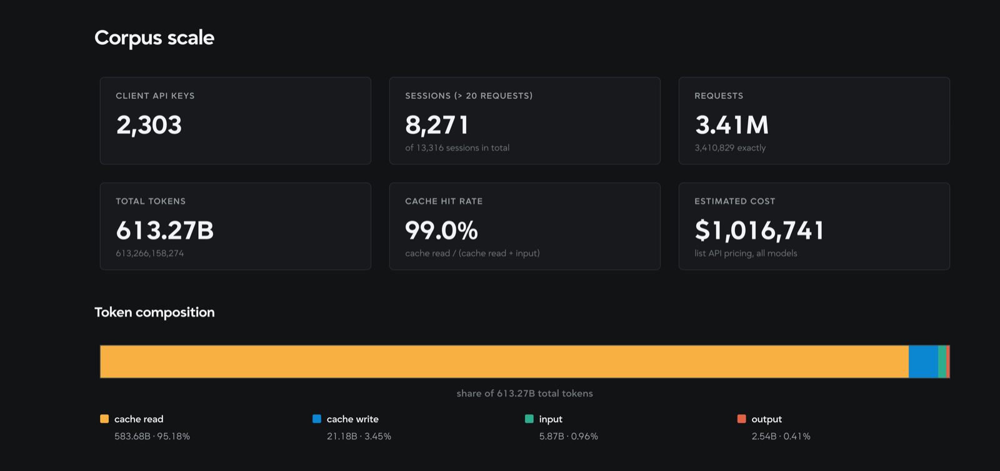
Corpus snapshot used for selection (cost is a list-price estimate, not a benchmark output). © SemiAnalysis, AgentX methodology.선별에 쓴 코퍼스 스냅샷(비용은 정가 기준 추정이며 벤치마크 결과가 아니다). © SemiAnalysis, AgentX 방법론.
NVIDIA Dynamo's load generator. AgentX ships traces in the WEKA trace format it reads, so the replay engine is off-the-shelf.NVIDIA Dynamo 의 부하 생성기다. AgentX 트레이스는 AIPerf 가 읽는 WEKA trace 포맷이라 재생 엔진이 기성품이다.
Each forms its own request chain; subagents run in parallel and rejoin the main chain.각자 요청 사슬을 이루며, 서브에이전트는 병렬로 돈 뒤 메인 사슬에 다시 합류한다.
Output tokens per second per user, the axis traded against throughput per chip.사용자 1인당 초당 출력 토큰이다. 칩당 throughput 과 맞바꾸는 축이다.
Participants opt in to an HTTP proxy that records arrival and completion times, input and output token counts, conversation IDs, and subagent IDs. The published corpus does not contain prompts, source code, tool arguments, or tool results. So what is replayed? 참가자가 HTTP 프록시에 옵트인하면, 프록시가 요청 도착·완료 시각, 입출력 토큰 수, 대화 ID, 서브에이전트 ID 를 기록한다. 공개 코퍼스에는 프롬프트·소스코드·툴 인자·툴 결과가 들어 있지 않다. 그렇다면 무엇을 재생하는가?
Each input is stored as session-scoped chained hashes in 64-token blocks. Matching block IDs preserve shared prefixes within a session, and AIPerf swaps the blocks for deterministic synthetic coding and tool-use tokens before replay. 각 입력은 64토큰 블록 단위의 세션 범위 연쇄 해시로 저장된다. 블록 ID 가 같으면 세션 안의 공유 프리픽스가 보존되고, 재생 직전에 AIPerf 가 블록을 결정적인 합성 코딩·툴 사용 토큰으로 바꾼다.
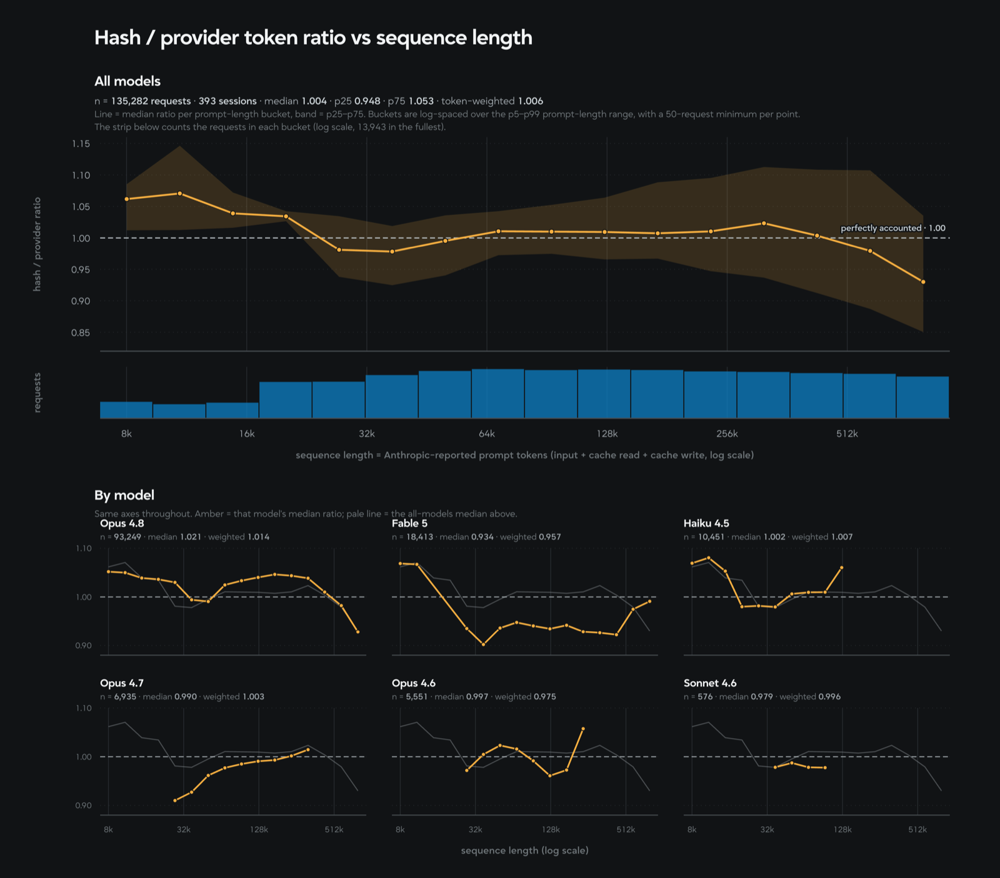
Median reconstructed/provider token ratio 1.004 over 135,282 requests from 393 sessions; bands are p25–p75, not a per-request bound. © SemiAnalysis.393개 세션, 요청 135,282건의 재구성/공급자 토큰 비율 중앙값 1.004. 음영은 p25–p75 이며 요청별 상한이 아니다. © SemiAnalysis.
A median of 1.004 means replayed requests are about 0.4% longer than what the provider billed, so length is not what distorts results. The band is a distribution, not a guarantee; individual requests can be further off. 중앙값 1.004 는 재생 요청이 공급자 청구량보다 약 0.4% 길다는 뜻이다. 길이가 결과를 왜곡하지는 않는다. 다만 음영대는 보장이 아니라 분포여서 개별 요청은 더 벗어날 수 있다.
A proxy outside the provider cannot see provider-side chat templates, proprietary tokenizers, server tools, encrypted reasoning content, or the exact token expansion of images and documents. AgentX approximates these with model-specific padding and deterministic placeholders that contain no original prompts, code, or tool payloads. 공급자 바깥의 프록시는 공급자 쪽 채팅 템플릿, 독자 토크나이저, 서버 툴, 암호화된 추론 콘텐츠, 이미지·문서의 정확한 토큰 전개를 볼 수 없다. AgentX 는 이를 모델별 패딩과 결정적 플레이스홀더로 근사하며, 여기에 원본 프롬프트·코드·툴 페이로드는 없다.
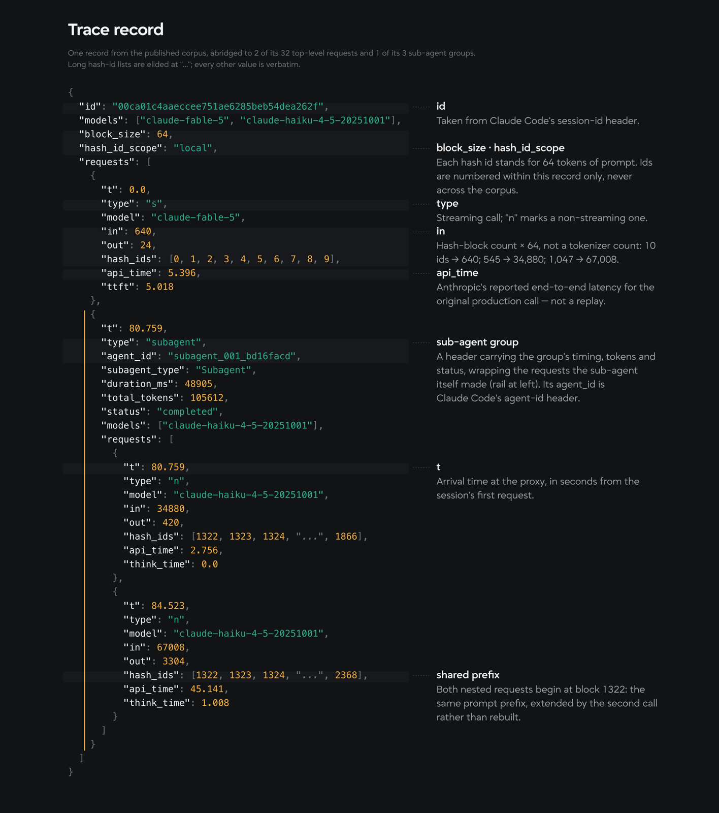
An abridged WEKA record; block IDs are session-local, and repeated IDs mark shared prefixes. © SemiAnalysis.축약한 WEKA 레코드. 블록 ID 는 세션 안에서만 유효하고, 반복되는 ID 가 공유 프리픽스를 가리킨다. © SemiAnalysis.
This record is the only input to everything downstream: five fields per request (t, in, out, api_time, hash_ids) plus nested subagent objects with their own agent_id, duration_ms, and request list.
이 레코드가 이후 모든 단계의 유일한 입력이다. 요청마다 필드 다섯 개(t, in, out, api_time, hash_ids)가 있고, 서브에이전트는 자기 agent_id·duration_ms·요청 목록을 가진 중첩 객체로 들어간다.
The v1.0 release contains 393 sessions built on June 21, 2026. Selection rules: at least 20 requests per session, Claude Code 2.1.139 or newer, no more than 10 concurrent subagents. Processing removes exact duplicates, short classifier calls used for security monitoring or title generation, and requests whose reconstructed input exceeds 990k tokens. v1.0 릴리스는 2026년 6월 21일 기준 393개 세션이다. 세션당 요청 20건 이상, Claude Code 2.1.139 이상, 동시 서브에이전트 10개 이하인 세션만 고른다. 완전 중복, 보안 모니터링·제목 생성용 짧은 분류기 호출, 재구성 입력이 990k 토큰을 넘는 요청은 뺀다.
Two variants ship, both in WEKA format: full keeps contexts up to 1M tokens, and 256k drops requests above its cap while keeping the relative timing and subagent overlap of the rest. 변형은 둘이고 둘 다 WEKA 포맷이다. full 은 컨텍스트를 1M 토큰까지 담고, 256k 는 상한을 넘는 요청을 버리되 나머지의 상대 타이밍과 서브에이전트 겹침은 유지한다.
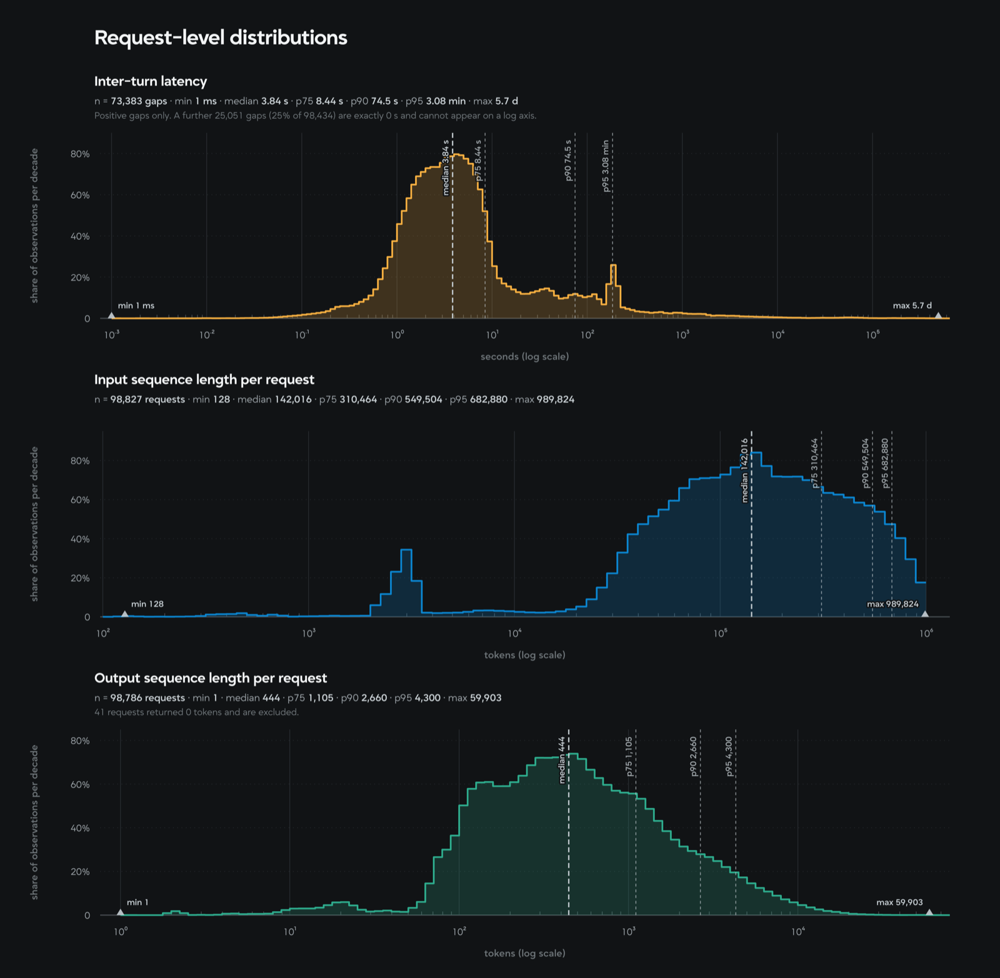
v1.0 request distributions; median request is 142,016 input / 444 output tokens. © SemiAnalysis.v1.0 요청 분포. 중앙값 요청은 입력 142,016 / 출력 444 토큰. © SemiAnalysis.
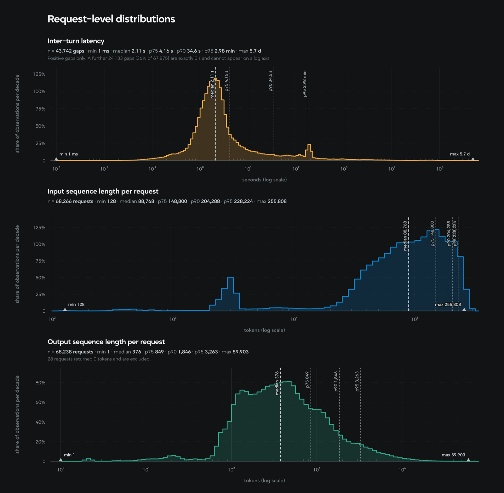
256k variant: 68,266 requests remain; median 88,768 input / 376 output tokens. © SemiAnalysis.256k 변형: 68,266건이 남고, 중앙값은 입력 88,768 / 출력 376 토큰. © SemiAnalysis.
The 256k variant is for systems that cannot serve 1M-token contexts. Capping drops median input from 142k to 89k, but the ratio is still 236:1. 256k 변형은 1M 컨텍스트를 서빙하지 못하는 시스템을 위한 것이다. 상한을 걸면 입력 중앙값이 142k 에서 89k 로 줄지만 비율은 여전히 236:1 이다.
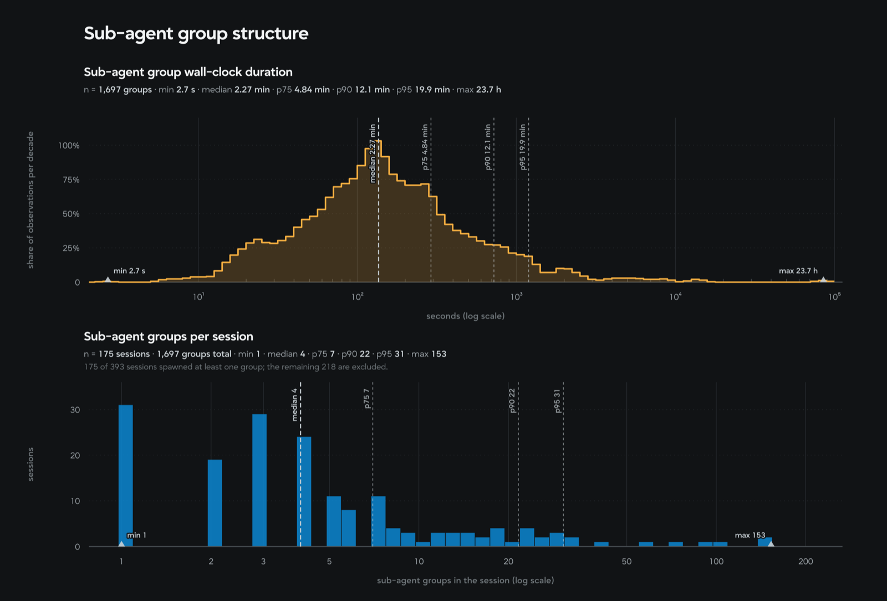
Full corpus: 175 sessions with subagents, 1,697 groups; median group 2.27 min, median four groups per session. © SemiAnalysis.전체 코퍼스: 서브에이전트가 있는 175개 세션, 1,697개 그룹. 그룹 중앙값 2.27분, 세션당 중앙값 4개. © SemiAnalysis.
256k variant: 1,697 groups; median 2.27 min, p95 18.5 min. © SemiAnalysis.256k 변형: 1,697개 그룹. 중앙값 2.27분, p95 18.5분. © SemiAnalysis.
Only 175 of 393 sessions use subagents, but a group then runs 2.27 minutes at the median and 18.5 minutes at p95. The p95 matters: one branch can hold state open for a third of the profiling hour. 서브에이전트를 쓰는 세션은 393개 중 175개뿐이다. 하지만 쓰면 그룹 하나가 중앙값 2.27분, p95 18.5분 동안 돈다. 중요한 쪽은 p95 다. 가지 하나가 프로파일링 1시간의 3분의 1 동안 상태를 붙잡을 수 있다.
AIPerf converts each trace into a directed acyclic graph. Main-agent requests form a linear chain. Subagent requests form separate chains that spawn after an eligible parent request and join before the next dependent main-agent request. One-off auxiliary requests can run without a join edge. AIPerf 는 트레이스마다 방향성 비순환 그래프를 만든다. 메인 에이전트 요청은 선형 사슬이다. 서브에이전트 요청은 별도 사슬로, 자격을 갖춘 부모 요청 뒤에 spawn 되고 다음 의존 메인 요청 앞에서 join 한다. 일회성 보조 요청은 join 간선 없이 돌 수 있다.
Each figure below has three panels: raw trace JSON (left), recorded timeline (top right), and the replay dependency graph AIPerf derives (bottom right). 아래 그림은 모두 세 패널로 되어 있다. 왼쪽은 원본 트레이스 JSON, 오른쪽 위는 기록된 타임라인, 오른쪽 아래는 AIPerf 가 만든 리플레이 의존성 그래프다.
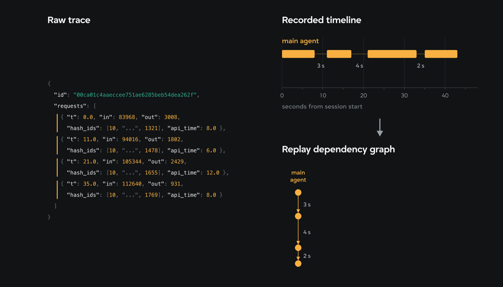
No subagents: a linear chain with recorded inter-turn delays. © SemiAnalysis.서브에이전트 없음: 턴 간 지연을 가진 선형 사슬. © SemiAnalysis.
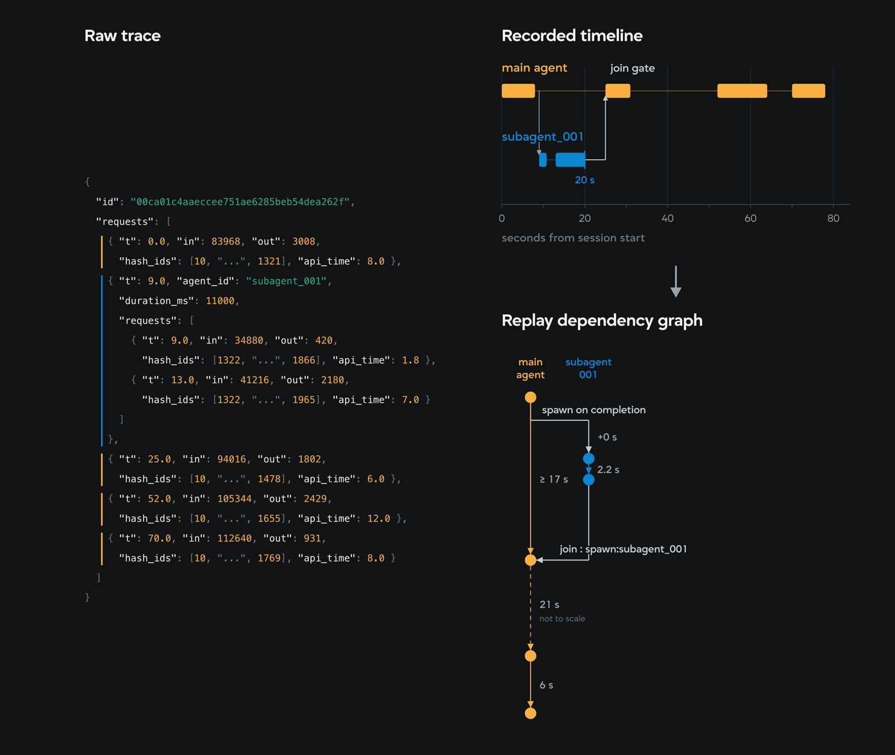
One subagent: spawns after the first main request, joins before the next dependent one. © SemiAnalysis.서브에이전트 하나: 첫 메인 요청 뒤 spawn, 다음 의존 메인 요청 앞 join. © SemiAnalysis.
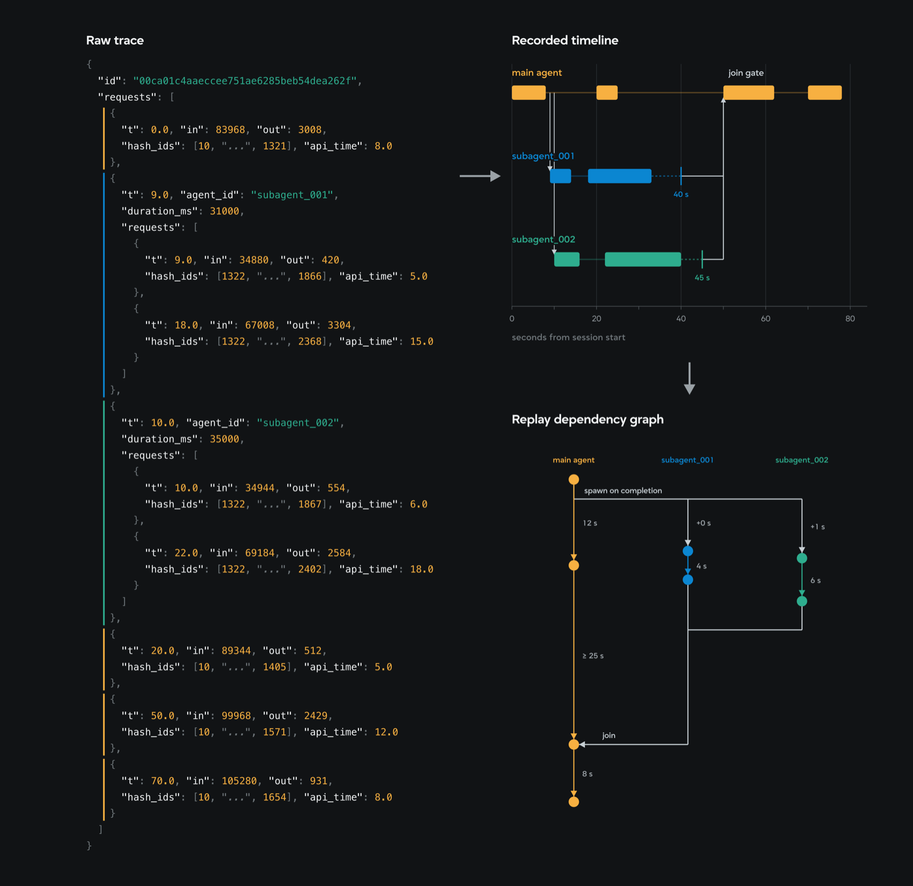
Two subagent chains from one main request share a single join gate. © SemiAnalysis.같은 메인 요청에서 나온 서브에이전트 사슬 둘이 join 게이트 하나를 공유. © SemiAnalysis.
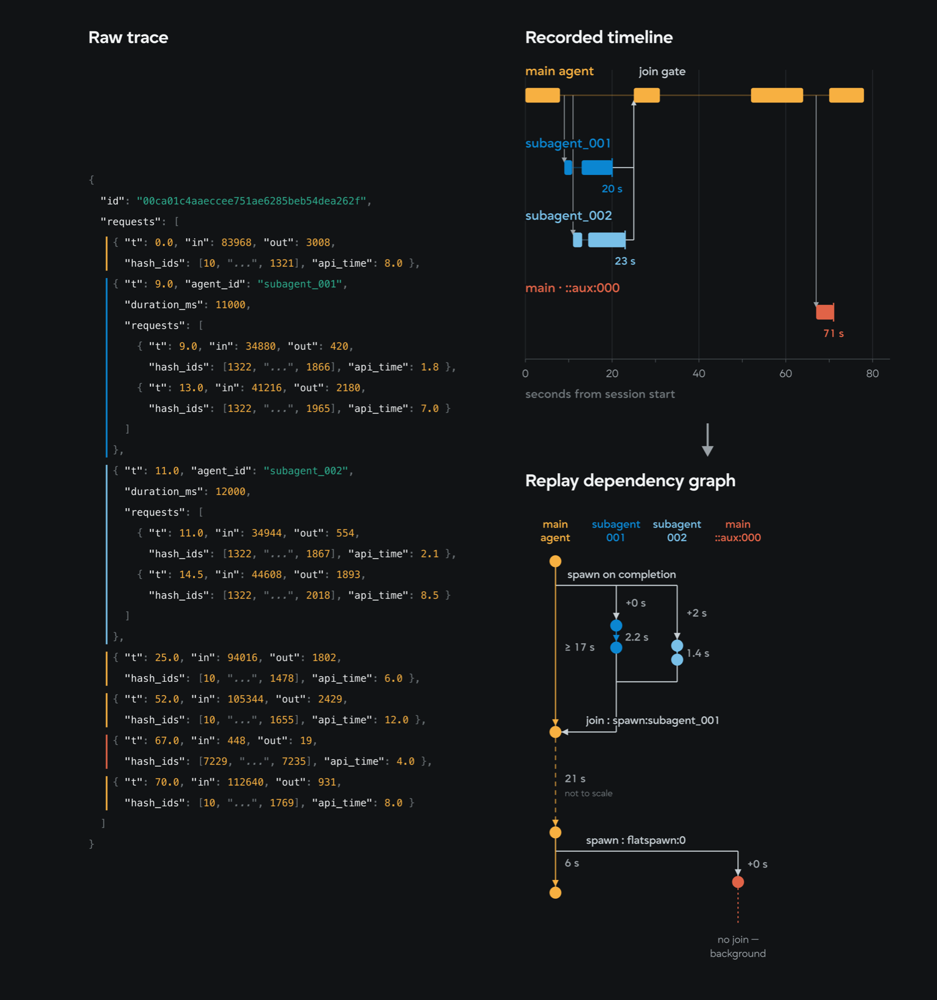
Parallel subagents share a join gate; the auxiliary request has no join edge (red "no join — background" branch). © SemiAnalysis.병렬 서브에이전트가 join 게이트를 공유하고, 보조 요청은 join 간선이 없다(빨간 "no join, background" 가지). © SemiAnalysis.
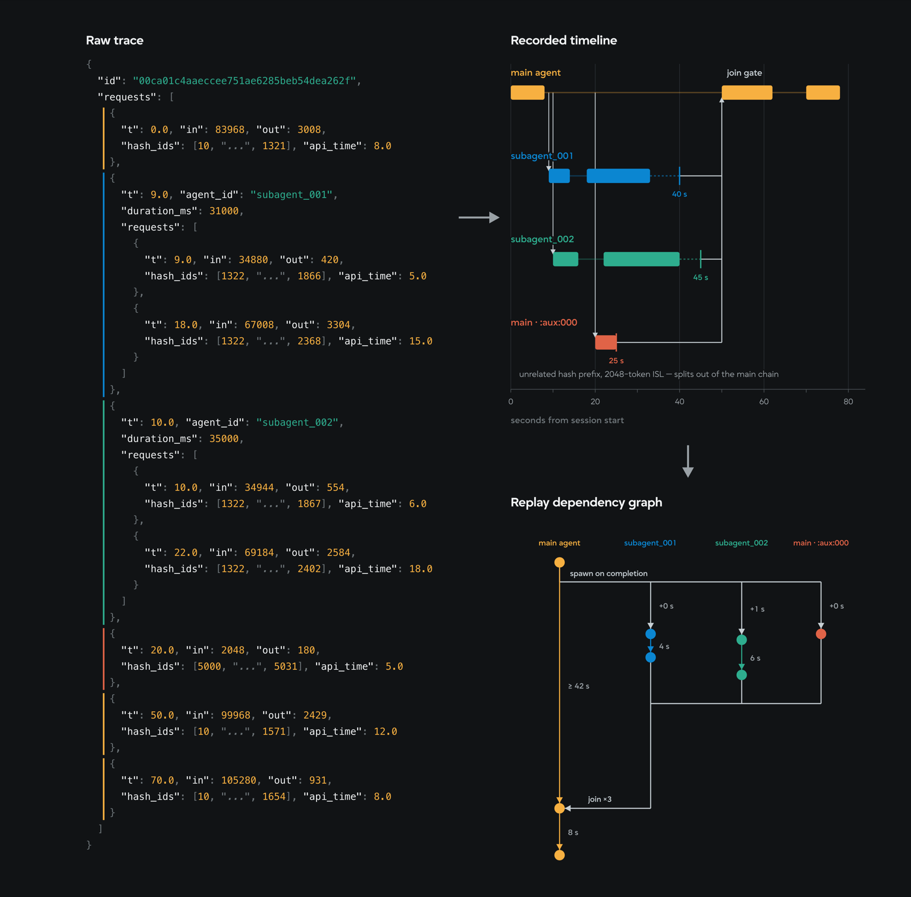
Flat-spawn: two subagent chains and one auxiliary request run in parallel and all three join. © SemiAnalysis.flat-spawn: 서브에이전트 사슬 둘과 보조 요청 하나가 병렬로 돌고 셋 모두 join. © SemiAnalysis.
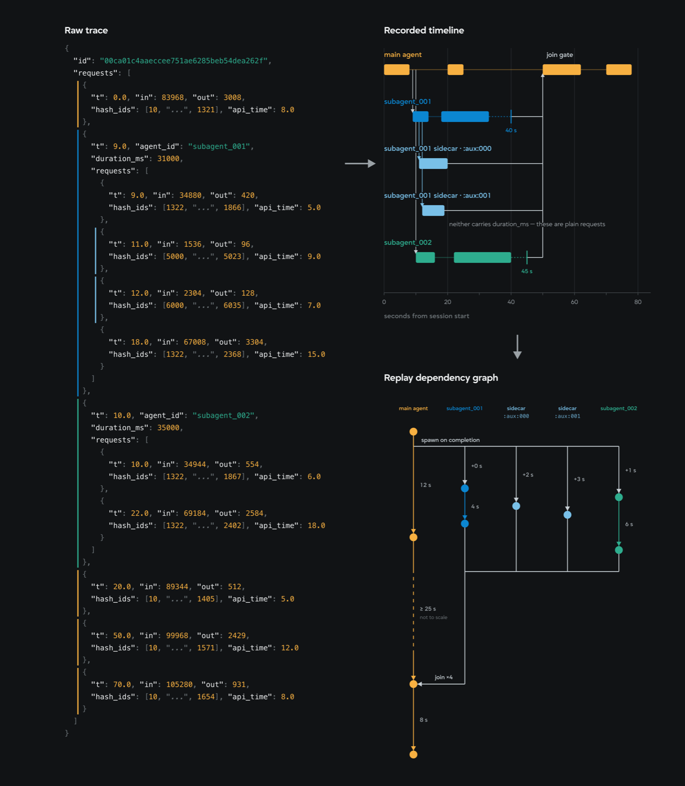
Two sidecar requests without duration metadata beside two subagent chains; one join waits for all four. © SemiAnalysis.duration 메타데이터가 없는 사이드카 요청 둘과 서브에이전트 사슬 둘. join 하나가 넷을 모두 기다린다. © SemiAnalysis.
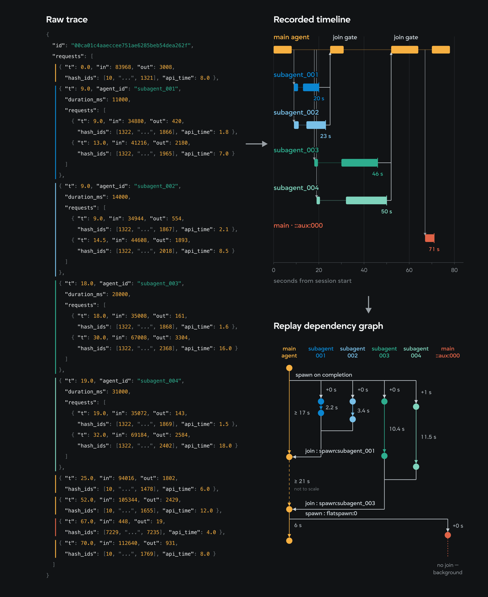
Multiple groups keep separate join points; the auxiliary branch stays detached. © SemiAnalysis.그룹이 여럿이면 join 지점을 따로 두고, 보조 가지는 떨어져 있다. © SemiAnalysis.
In AgentX, concurrency is the number of live agent clients, not a fixed HTTP request batch, because one client can fan out into several subagent requests. So the server can have more in-flight requests than the configured client concurrency. AgentX 에서 동시성은 살아 있는 에이전트 클라이언트 수이지 고정된 HTTP 요청 배치가 아니다. 클라이언트 하나가 여러 서브에이전트 요청으로 갈라지기 때문에 서버의 in-flight 요청 수가 설정한 클라이언트 동시성보다 많을 수 있다.
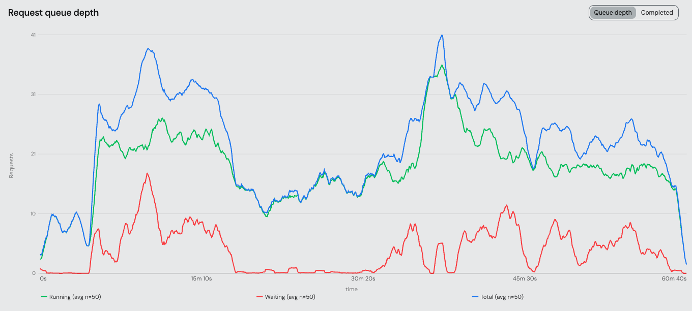
Running and waiting HTTP requests in a 50-client replay. © SemiAnalysis.50-클라이언트 재생의 실행 중·대기 중 HTTP 요청 수. © SemiAnalysis.
"Concurrency 50" elsewhere means 50 requests in flight; here it means 50 live sessions, with a time-varying in-flight count. Two systems at the same client concurrency can run at quite different instantaneous batch sizes. 다른 벤치마크의 "동시성 50" 은 in-flight 요청 50개를 뜻한다. 여기서는 살아 있는 세션 50개이고, in-flight 수는 시간에 따라 변한다. 같은 클라이언트 동시성에서도 두 시스템의 순간 배치 크기는 꽤 다를 수 있다.
AgentX runs closed loop: a client submits its next eligible request after dependencies complete. The page admits that faster systems progress farther through their sampled sessions during the same hour, so the exact request mix can vary, especially at low concurrency. AgentX 는 닫힌 루프다. 클라이언트는 의존성이 끝나야 다음 요청을 낸다. 원문도 빠른 시스템은 같은 1시간 동안 세션을 더 멀리 진행하므로, 특히 낮은 동시성에서 요청 구성이 달라질 수 있다고 인정한다.
The page prescribes exactly that: results should report throughput with time to first token (TTFT) and interactivity. A single latency value does not describe the run. The Pareto curve is the intended output. 원문의 처방도 같다. 결과는 throughput 을 TTFT 및 interactivity 와 함께 보고해야 하며, 단일 지연 값으로는 실행을 설명할 수 없다. 의도된 출력 형식은 파레토 곡선이다.
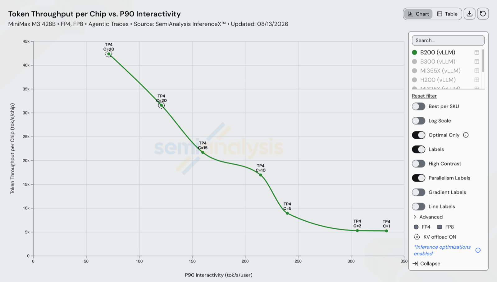
Each point is a client-concurrency setting. MiniMax M3 428B · FP4, FP8 · agentic traces · B200 (vLLM) · TP4. © SemiAnalysis.점 하나가 클라이언트 동시성 설정 하나다. MiniMax M3 428B · FP4, FP8 · 에이전트 트레이스 · B200 (vLLM) · TP4. © SemiAnalysis.
From C=1 to C=30, throughput per chip rises from roughly 5k to 42k tok/s (about 8×) while P90 interactivity falls from roughly 333 to 70 tok/s/user (about 4.8× worse). There is no single "performance" number, only a curve; where to sit on it is a product decision.
C=1 에서 C=30 으로 가면 칩당 throughput 은 약 5k 에서 42k tok/s 로 약 8배 오르고, P90 interactivity 는 약 333 에서 70 tok/s/user 로 약 4.8배 나빠진다. 단일 "성능" 숫자는 없고 곡선만 있다. 곡선의 어디를 고를지는 제품 결정이다.
C=20 and C=30. At low concurrency the working set fits in HBM; past some point, putting KV elsewhere is the only way to climb the throughput axis.
점선 원은 KV 오프로드 ON 이며, throughput 이 가장 높은 두 점 C=20·C=30 에만 붙어 있다. 동시성이 낮으면 워킹셋이 HBM 에 들어가지만, 어느 지점을 넘으면 KV 를 다른 곳에 두는 것만이 throughput 을 더 올리는 길이다.
With 95% of tokens being cache reads, the cache state when the clock starts decides the result. Cold, you benchmark prefill; warm, you benchmark the real workload. AgentX uses this protocol: 토큰의 95%가 캐시 읽기라면 측정 시작 시점의 캐시 상태가 결과를 정한다. 차가운 캐시에서 재면 prefill 을 재고, 데운 캐시에서 재야 실제 워크로드를 잰다. AgentX 의 절차는 다음과 같다.
| Step단계 | What happens무슨 일이 일어나나 |
|---|---|
| Seeded start point시드로 정한 시작점 | A fixed seed picks each replay start uniformly from 25% to 75% of the session duration, so the session is already in progress and the prefix is long.고정 시드가 재생 시작점을 세션 길이의 25%–75% 구간에서 균일하게 고른다. 이미 진행 중인 세션이라야 프리픽스가 길다. |
max_tokens=1 primer프라이머 |
A one-token request builds the active main-agent and subagent KV state without paying for generation.토큰 하나짜리 요청으로 활성 메인·서브에이전트 프리픽스의 KV 상태를 생성 비용 없이 만든다. |
| 10 warmup requests per lane레인당 워밍업 요청 10건 | Each replay lane completes ten more requests before the measurement barrier opens.측정 배리어가 열리기 전에 각 재생 레인이 요청 10건을 더 끝낸다. |
| 1-hour profiling window1시간 프로파일링 창 | Only this window contributes reported metrics. Everything before it is setup.이 창만 보고 지표에 기여한다. 그 앞은 전부 준비 과정이다. |
| Cache-bust marker캐시 무효화 표식 | A unique marker is added to each recycled play so unrelated replays cannot accumulate a shared prefix.재활용되는 재생마다 고유 표식을 붙여, 서로 무관한 재생들이 공유 프리픽스를 쌓지 못하게 한다. |
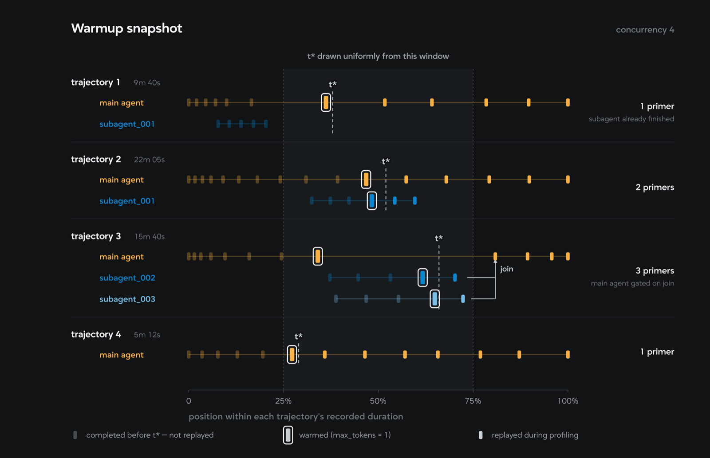
Seeded t* within the 25–75% interval, with primers before profiling. © SemiAnalysis.25–75% 구간 안의 시드 시작점 t* 와 프로파일링 전 프라이머. © SemiAnalysis.
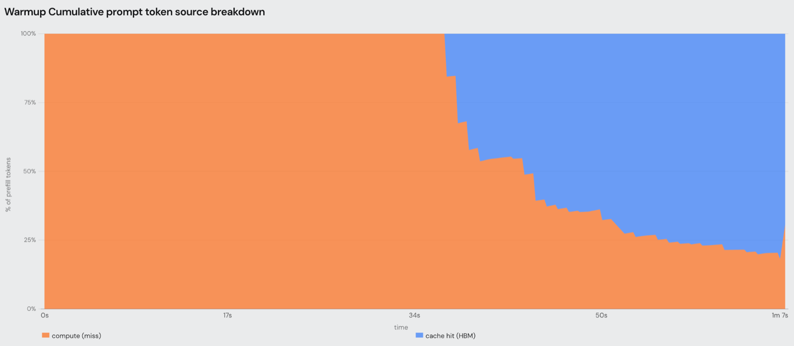
Prompt-token source during warmup. © SemiAnalysis.워밍업 중 프롬프트 토큰 출처. © SemiAnalysis.
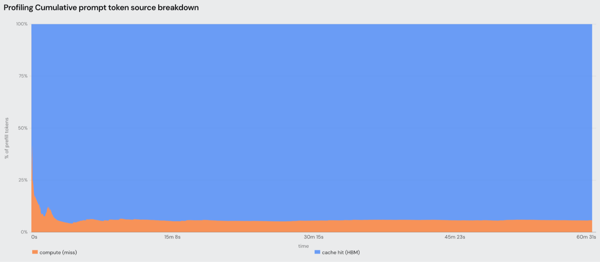
Prompt-token source during the measured hour; HBM cache hits dominate. © SemiAnalysis.측정 1시간 동안의 프롬프트 토큰 출처. HBM 캐시 히트가 지배적이다. © SemiAnalysis.
In warmup, compute misses spike to ~40% of prompt tokens and then decay. In the measured hour the miss band stays a thin sliver (roughly 5%) for all sixty minutes. That sliver is the workload. Starting the clock at the left edge of warmup would describe a state production systems almost never occupy. 워밍업에서는 compute miss 가 프롬프트 토큰의 40% 가까이 치솟았다가 줄어든다. 측정 시간에는 miss 대역이 60분 내내 약 5% 의 얇은 띠로 남는다. 그 얇은 띠가 실제 워크로드다. 워밍업 시작점부터 쟀다면 실제 시스템이 거의 머물지 않는 상태를 숫자로 발표했을 것이다.
Synthetic tokens preserve length and prefix structure, but their draft-token acceptance does not match natural model output. In speculative decoding a small draft model proposes tokens the big model accepts or rejects, and acceptance depends on how predictable the text is. With deterministic filler, the acceptance rate reflects the filler, not the serving stack. 합성 토큰은 길이와 프리픽스 구조는 보존하지만 초안 토큰 수용률(draft-token acceptance)은 자연스러운 모델 출력과 다르다. speculative decoding 에서는 작은 초안 모델이 토큰을 제안하고 큰 모델이 수용하거나 거부하는데, 수용 개수는 텍스트가 얼마나 예측 가능한지에 달렸다. 결정적 채움 문자열을 넣으면 수용률은 서빙 스택이 아니라 채움 문자열을 반영한다.
AgentX's answer: take a measured acceptance length from the coding category of SPEED-Bench per model, speculative method, draft length, and thinking mode, and force it. AgentX 는 SPEED-Bench 코딩 카테고리에서 실측한 수용 길이를 모델·speculative 방식·초안 길이·thinking 모드별로 가져와 강제한다.
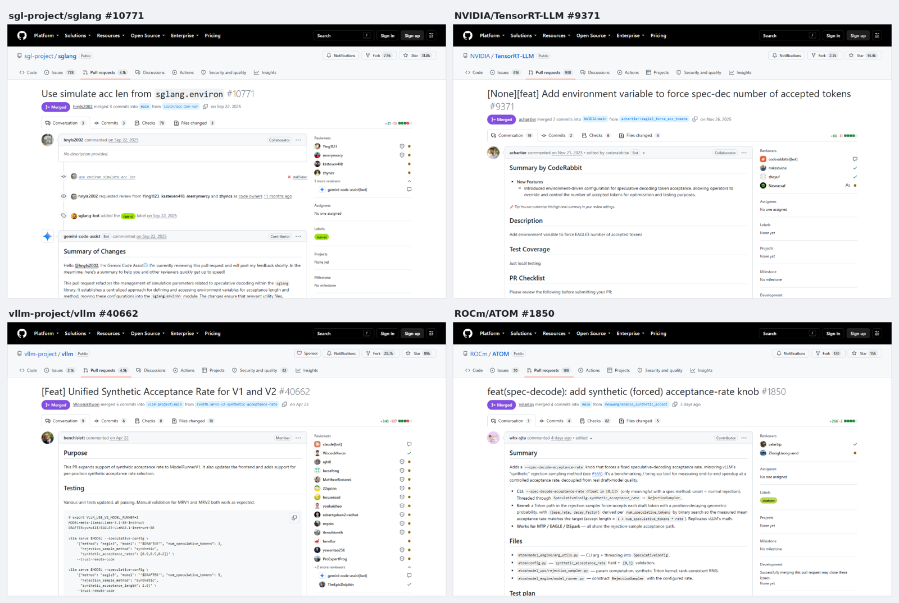
Merged engine changes adding forced-acceptance controls. © SemiAnalysis.강제 수용 제어를 추가한 병합된 엔진 변경. © SemiAnalysis.
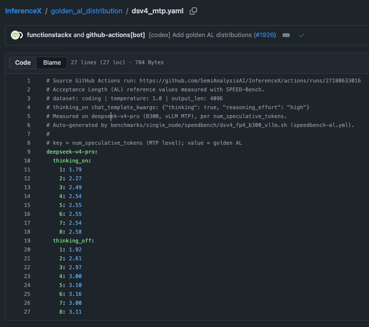
Versioned golden acceptance-length file (SPEED-Bench values per draft length and thinking mode). © SemiAnalysis.버전 관리되는 golden acceptance-length 파일(초안 길이·thinking 모드별 SPEED-Bench 값). © SemiAnalysis.
KV-cache offload changes the capacity available to long sessions, and at a 320:1 input-to-output ratio capacity is everything. Without written rules, every vendor would pick the DRAM configuration that flatters them. KV 캐시 오프로드는 장시간 세션이 쓸 수 있는 용량을 바꾸고, 입력:출력이 320:1 이면 용량이 곧 성능이다. 규칙이 없으면 벤더마다 자기에게 유리한 DRAM 구성을 고를 것이다.
An unusually large host cannot buy an advantage a buyer could not reproduce.유별나게 큰 호스트로 구매자가 재현할 수 없는 이점을 얻지 못하게 한다.
GB200 NVL72, GB300 NVL72, and TPUv7 use their well-defined shipping configuration.GB200 NVL72, GB300 NVL72, TPUv7 은 명확히 정의된 출하 구성을 그대로 쓴다.
The page is unusually direct about its limits. 원문은 자기 한계를 유난히 직설적으로 밝힌다.
| Preserved보존되는 것 | Not reproduced재현되지 않는 것 |
|---|---|
| Client-visible request lengths클라이언트가 볼 수 있는 요청 길이 | Provider-hidden transformations — chat templates, proprietary tokenizers, server-side tools, encrypted reasoning content공급자 내부 변환: 채팅 템플릿, 독자 토크나이저, 서버 측 툴, 암호화된 추론 콘텐츠 |
| Timing — arrival, completion, inter-turn delay타이밍: 도착·완료·턴 간 지연 | The semantic content of the original session원본 세션의 의미 내용 |
| Branch structure — spawn and join topology분기 구조: spawn·join 위상 | The tool-level cause of each branch각 분기의 툴 수준 원인 |
| KV-prefix reuseKV 프리픽스 재사용 | Model answer quality — stated flatly: "AgentX does not evaluate model answer quality."모델 답변 품질: "AgentX does not evaluate model answer quality." |